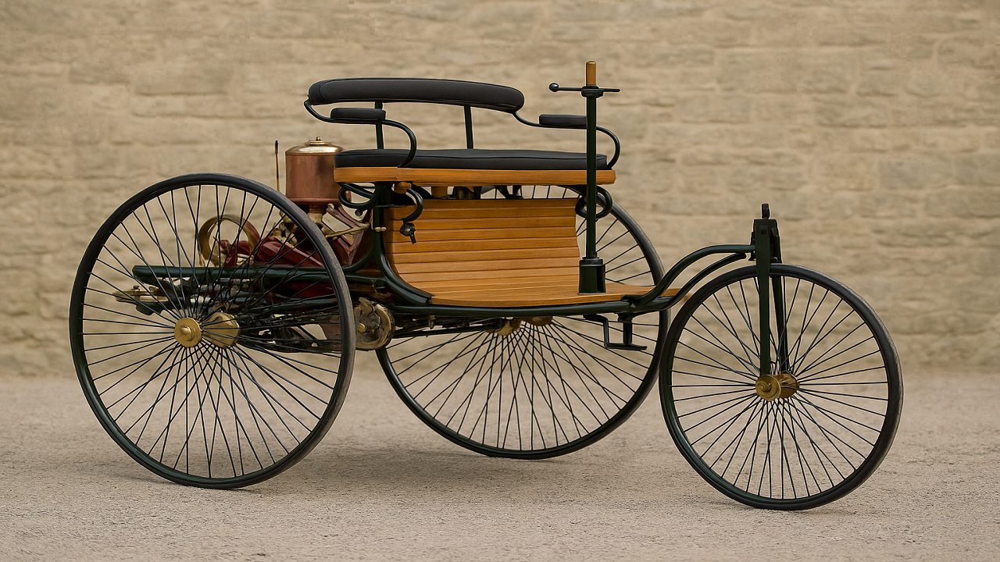
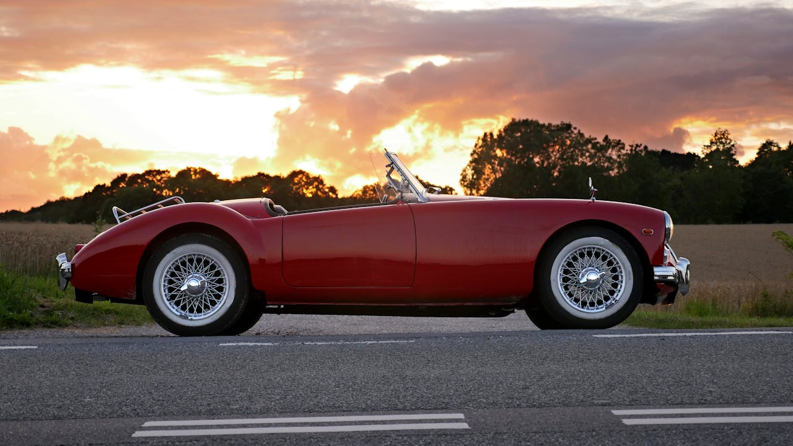
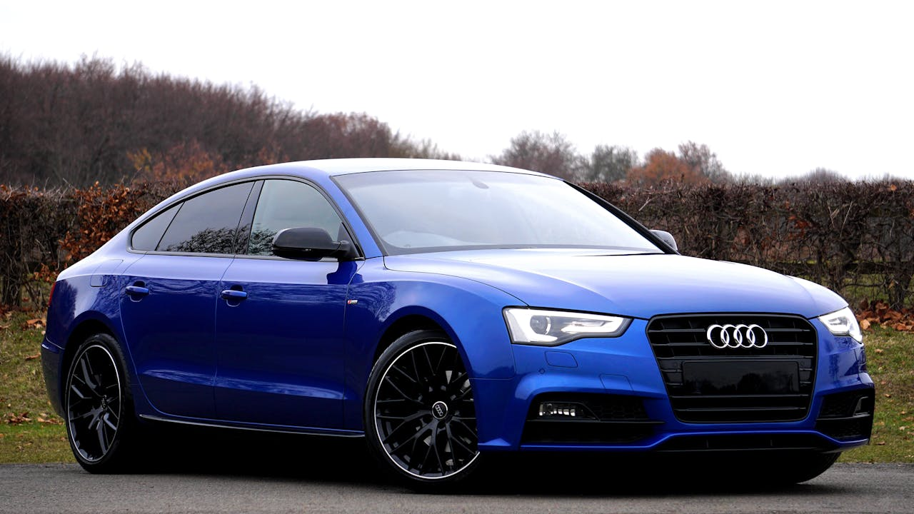
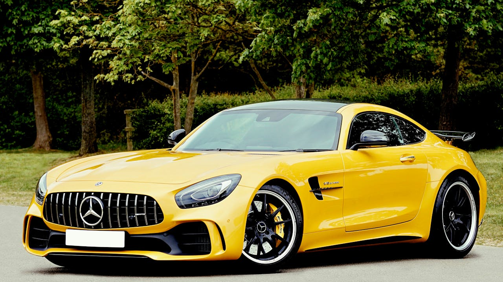

EN TIDSRESA PÅ FYRA HJUL
Från de första ångdrivna vagnarna på 1700-talet till dagens självkörande elbilar har bilen genomgått en otrolig resa. 1886 byggde Karl Benz världens första bensindrivna bil, vilket blev startskottet för en ny era av transport. Under 1900-talet utvecklades bilarna snabbt – från enkla handbyggda fordon till massproducerade modeller som förändrade världen. Idag fortsätter bilens utveckling med fokus på hållbarhet, teknik och innovation, där eldrift och smarta system formar framtidens mobilitet.



